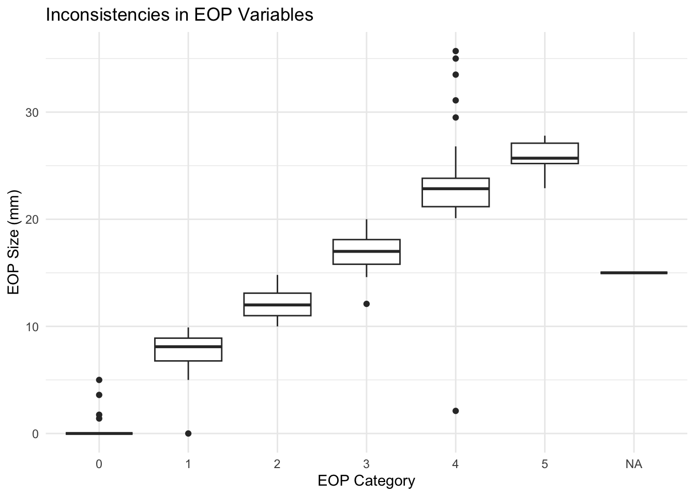
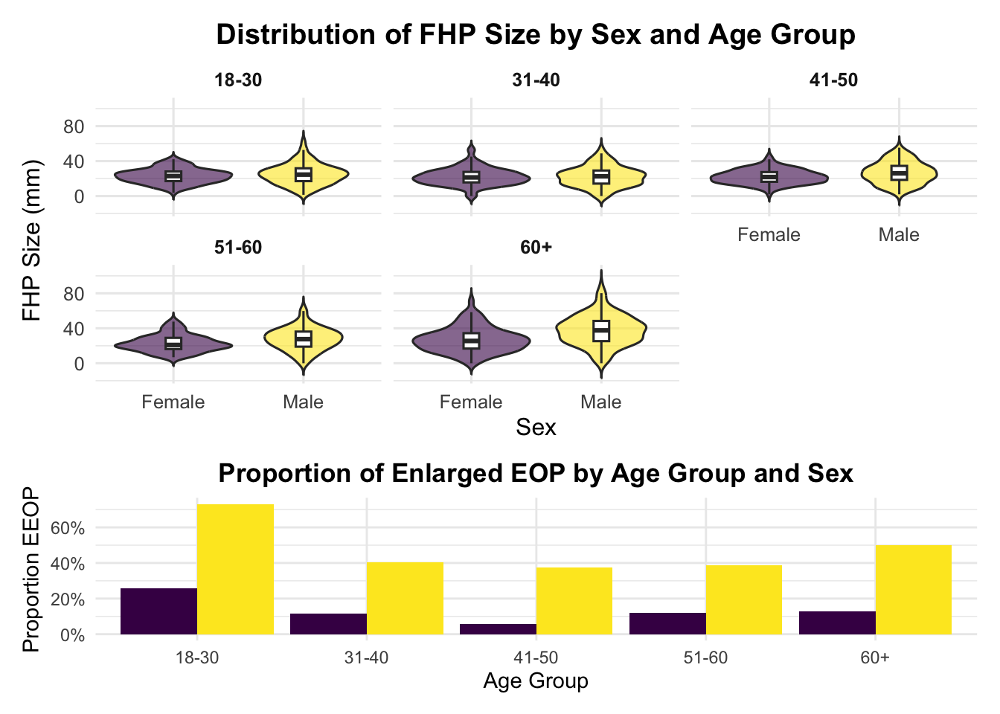
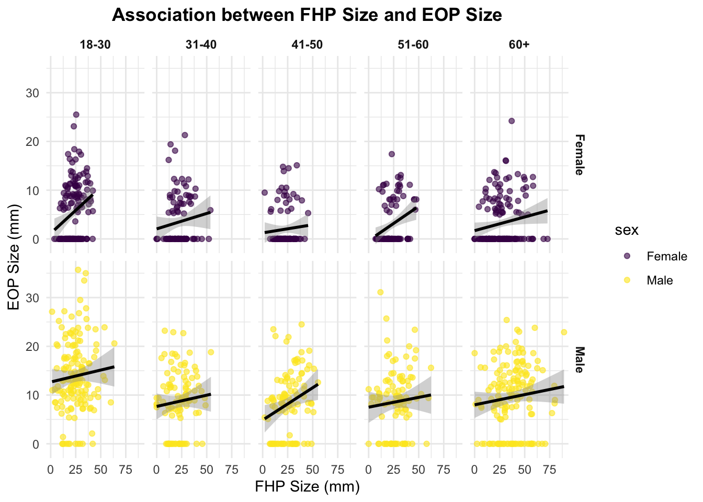

Shahar and Sayer’s paper examined 1,200 lateral cervical radiographs of people aged 18 to 86. They measured the size of the external occipital protuberance (EOP) to identify if it was enlarged (defined as the EEOP >10 mm) and examined how well factors like sex, age and forward head protraction (FHP) predicted EEOP. The most surprising predictor found in this study was age; they found an association between increased age and a decrease in enthesophyte size. Here, we will investigate the validity of their claims by reviewing the data.
# importing the dataset and doing initial tidying
exo_df = (
read_excel("data/p8105_mtp_data.xlsx", sheet = "this one", skip = 8) |>
janitor::clean_names() |>
rename(
eop_size_category = eop_size
) |>
mutate(
eop_size_mm = replace_na (eop_size_mm, 0)
)
)age_map <- c(
"1" = "0-17",
"2" = "18-30",
"3" = "31-40",
"4" = "41-50",
"5" = "51-60",
"6" = "60+",
"7" = "60+",
"8" = "60+"
)
sex_map <- c("1" = "Male", "0" = "Female")
exo_df <- exo_df |>
mutate(
# convert sex and age group
sex = factor(recode(as.character(sex), !!!sex_map)),
age_group = factor(recode(as.character(age_group), !!!age_map),
levels = c("18-30","31-40","41-50","51-60","60+"),
ordered = TRUE),
# numeric transformations
age = as.numeric(age),
eop_size_mm = as.numeric(eop_size_mm),
fhp_size_mm = as.numeric(fhp_size_mm),
# factor transformations
eop_size_category = factor(eop_size_category, levels = 0:5, ordered = TRUE),
eop_visibility_classification = as.factor(eop_visibility_classification),
eop_shape = as.factor(eop_shape),
fhp_category = factor(fhp_category, levels = 0:max(fhp_category, na.rm = TRUE), ordered = TRUE)
) |>
# filter out 0-17 age group
filter(!is.na(age_group))sum_table <- exo_df |>
# calculates overall summary stats
summarize(
total_count = n(),
total_mean_age = mean(age, na.rm = TRUE),
total_sd_age = sd(age, na.rm = TRUE),
total_min_age = min(age, na.rm = TRUE),
total_max_age = max(age, na.rm = TRUE)
) |>
# add a total row to aggregate the values
mutate( sex = "Total") |>
select(sex,
count = total_count,
mean_age = total_mean_age,
sd_age = total_sd_age,
min_age = total_min_age,
max_age = total_max_age) |>
bind_rows(
exo_df |>
# groups the stats by sex
group_by(sex) |>
summarize(
count = n(),
mean_age = mean(age, na.rm = TRUE),
sd_age = sd(age, na.rm = TRUE),
min_age = min(age, na.rm = TRUE),
max_age = max(age, na.rm = TRUE),
.groups = "drop"
)
) |>
# compute % of participants by sex
mutate(
percent = round(count / sum(count) * 100, 1)) |>
select(
sex, count, percent, mean_age, min_age, max_age)First, we tidy the exo_df data by standardizing the
names of columns. Then, we replace the missing values in column
eop_size_mm with 0, as indicated in the header.
sex was converted to a factor, and age_group,
eop_size_category, and fhp_category were all
converted to ordered factors to preserve the natural ranking of the
groups. Key variables represented in the dataset are sex,
age_group, eop_size_mm and its category
ranking eop_size_category, and fhp_size_mm and
its category ranking fhp_size_category. There were 1219
participants included in the study, where 613 were women and 606 were
men (Table 1). A review of the dataset revealed potential
inconsistencies between categorical variables and their continuous
counterparts. For the variable eop_size_category, the 4th
categories’ EOP sizes ranged from 2.11mm to 35.7mm, which is
inconsistent with the intended ranges (Fig. 1).
kable(sum_table, format = "markdown")| sex | count | percent | mean_age | min_age | max_age |
|---|---|---|---|---|---|
| Total | 1219 | 50.0 | 45.53569 | 18 | 88 |
| Female | 613 | 25.1 | 45.68352 | 18 | 87 |
| Male | 606 | 24.9 | 45.38614 | 18 | 88 |
Table 1
# checking issues btwn categorical and continuous versions
exo_df |>
group_by(age_group) |>
summarize(
min_age = min(age, na.rm = TRUE),
max_age = max(age, na.rm = TRUE)
)## # A tibble: 5 × 3
## age_group min_age max_age
## <ord> <dbl> <dbl>
## 1 18-30 18 30
## 2 31-40 31 40
## 3 41-50 41 50
## 4 51-60 51 60
## 5 60+ 61 88exo_df |>
group_by(eop_size_category) |>
summarize(
mean_mm = mean(eop_size_mm, na.rm = TRUE),
min_mm = min(eop_size_mm, na.rm = TRUE),
max_mm = max(eop_size_mm, na.rm = TRUE)
)## # A tibble: 7 × 4
## eop_size_category mean_mm min_mm max_mm
## <ord> <dbl> <dbl> <dbl>
## 1 0 0.0226 0 5
## 2 1 7.75 0 9.9
## 3 2 12.1 10 14.8
## 4 3 17.0 12.1 20
## 5 4 23.2 2.11 35.7
## 6 5 25.7 22.9 27.8
## 7 <NA> 15 15 15exo_df |>
group_by(fhp_category) |>
summarize(
mean_fhp = mean(fhp_size_mm, na.rm = TRUE),
min_fhp = min(fhp_size_mm, na.rm = TRUE),
max_fhp = max(fhp_size_mm, na.rm = TRUE)
)## # A tibble: 9 × 4
## fhp_category mean_fhp min_fhp max_fhp
## <ord> <dbl> <dbl> <dbl>
## 1 0 5.94 0 9.8
## 2 1 15.6 10 33.8
## 3 2 24.8 20 31.8
## 4 3 34.2 30 39.9
## 5 4 46.0 40.1 89.3
## 6 5 55.2 50 59.8
## 7 6 64.5 60.1 68.9
## 8 7 76.0 70.5 79.9
## 9 <NA> 30.3 30.3 30.3inconsistency_plot
Figure 1
# create fhp plot
fhp_dist <- fhp_data |>
ggplot(aes(x = sex, y = fhp_size_mm, fill = sex)) +
geom_violin(trim = FALSE, alpha = 0.6) +
geom_boxplot(width = 0.12, outlier.shape = NA, fill = "white") +
facet_wrap(~ age_group, ncol = 3) +
scale_fill_viridis_d(option = "D", alpha = 0.9) +
labs(
title = "Distribution of FHP Size by Sex and Age Group",
x = "Sex",
y = "FHP Size (mm)"
) +
theme_minimal(base_size = 12) +
theme(
legend.position = "none",
strip.text = element_text(face = "bold"),
plot.title = element_text(face = "bold", hjust = 0.5)
)# create EEOP plot
eeop_dist <- eop_summary |>
ggplot(aes(
x = age_group, y = prop_enlarged, fill = sex)) +
geom_bar(
stat = "identity", position = position_dodge()) +
scale_y_continuous(
labels = scales::percent_format(accuracy = 1)) +
scale_fill_viridis_d(alpha = 1) +
labs(
title = "Proportion of Enlarged EOP by Age Group and Sex",
x = "Age Group", y = "Proportion EEOP") +
theme_minimal() +
theme(legend.position = "none",
plot.title = element_text(face = "bold", hjust = 0.5))
combined_plot <- fhp_dist / eeop_dist +
plot_layout(heights = c(2,1))# combined plot
combined_plot
Figure 2
# faceted scatter plot
scatterplot <- exo_df |>
ggplot(aes(
x = fhp_size_mm,
y = eop_size_mm,
color = sex)) +
geom_point(alpha = 0.6) +
geom_smooth(method = "lm", se = TRUE, color = "black") +
scale_color_viridis_d(option = "D") +
facet_grid(sex ~ age_group) +
labs(
title = "Association between FHP Size and EOP Size",
x = "FHP Size (mm)",
y = "EOP Size (mm)"
) +
theme_minimal() +
theme(
strip.text = element_text(face = "bold"),
plot.title = element_text(face = "bold", hjust = 0.5)
)scatterplot## `geom_smooth()` using formula = 'y ~ x'
Figure 3
Consistent with Shaher & Sayers, Figure 2 shows that EEOPs are most prevalent among younger males, with the greatest proportion observed in the 18-30 year category. Median FHP size was slightly larger in males, with greater overall variability than in females. Figure 3 indicates a generally positive association between FHP and EOP sizes across most age groups and sexes.
The author’s sample sizes in each age group were not fully consistent
with the data available. For instance, the paper states that the
18-30-year group included 300 participants, whereas this dataset
contains 303 individuals in that category. The mean FHP in the male
cases was 28.5 ± 14.7 mm, consistent with the author’s findings.
Similarly, the mean FHP among females was 23.7 ± 10.6 mm. EEOP is
defined by Shaher and Sayers as an EOP exceeding 10 mm in size. Using
the corresponding variable eop_size_category, EEOP was
defined defined as eop_size_category >= 2. Using this
criteria, the prevalence of EEOP was 32.3, closely aligning with the
reported value of 33% in the original study.
fhp_data |>
summarize(
mean_fhp = mean(fhp_size_mm, na.rm = TRUE),
sd_fhp = sd(fhp_size_mm, na.rm = TRUE)
)## # A tibble: 1 × 2
## mean_fhp sd_fhp
## <dbl> <dbl>
## 1 26.1 13.0fhp_data |>
group_by(sex) |>
summarize(
mean_fhp = mean(fhp_size_mm, na.rm = TRUE),
sd_fhp = sd(fhp_size_mm, na.rm = TRUE),
n = n()
)## # A tibble: 2 × 4
## sex mean_fhp sd_fhp n
## <fct> <dbl> <dbl> <int>
## 1 Female 23.7 10.6 611
## 2 Male 28.5 14.7 602exo_df |>
summarize(
prevalence_enlarged_eop = mean(eop_size_category >= 2, na.rm = TRUE)
)## # A tibble: 1 × 1
## prevalence_enlarged_eop
## <dbl>
## 1 0.323exo_df |>
filter(age_group == "60+", !is.na(fhp_size_mm)) |>
summarize(
percent_over_40 = mean(fhp_size_mm > 40) * 100
)## # A tibble: 1 × 1
## percent_over_40
## <dbl>
## 1 32.6The percentage of participants aged 60+ with FHP greater than 40 mm was calculated as 32.6%, slightly smaller than the report’s 34.5%. My findings support the authors’ observation that males tend to exhibit more robust cranial traits; however, there is insufficient evidence to conclude that cell phone use causes horn growth. Given the retrospective, cross-sectional nature of the data, establishing such a link would require longitudinal and behavioral measures of posture and device usage.